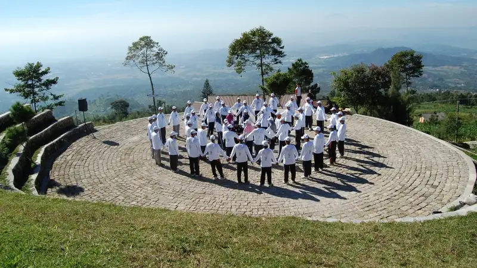

Outbound corporate team building adalah program pelatihan berbasis aktivitas luar ruang yang dirancang untuk memperkuat kerja sama, komunikasi, dan kepercayaan antaranggota tim di lingkungan kerja. Program ini umumnya menggabungkan permainan kelompok, simulasi, dan sesi refleksi terpandu.
- Outbound corporate team building menggabungkan aktivitas fisik, permainan strategi, dan diskusi reflektif untuk membangun kerja sama tim.
- Manfaat utamanya meliputi peningkatan komunikasi, kepercayaan antaranggota, dan pemahaman peran masing-masing individu dalam tim.
- Program dapat disesuaikan dengan tujuan spesifik perusahaan, mulai dari onboarding karyawan baru hingga penyelesaian konflik internal.
- Biaya dan durasi bervariasi tergantung jumlah peserta, lokasi, dan jenis aktivitas yang dipilih.
- Memilih penyedia yang tepat memerlukan evaluasi terhadap pengalaman fasilitator, standar keselamatan, dan relevansi program dengan kebutuhan tim.
Apa Itu Outbound Corporate Team Building?
Outbound corporate team building adalah rangkaian kegiatan pelatihan tim yang dilakukan di luar lingkungan kantor, biasanya di area terbuka seperti pegunungan, perkebunan, atau lokasi wisata alam, dengan tujuan memperkuat hubungan kerja antaranggota tim.
Konsep ini berakar dari metode pelatihan pengalaman (experiential learning), di mana peserta belajar melalui pengalaman langsung alih-alih hanya menerima materi teori di dalam kelas. Setiap aktivitas dirancang untuk mensimulasikan tantangan kerja tim sehari-hari, seperti pengambilan keputusan bersama, pembagian tugas, dan komunikasi di bawah tekanan waktu.
Menurut sebuah tinjauan industri pelatihan korporat, penggunaan metode experiential learning pada program pengembangan tim tercatat mengalami peningkatan permintaan sejak 2022 seiring meningkatnya perhatian perusahaan terhadap keterlibatan karyawan pascapandemi (Sumber: laporan tren pelatihan korporat, periode 2022-2024).
Program ini berbeda dari pelatihan formal di kelas karena menekankan pembelajaran melalui pengalaman nyata dan refleksi kelompok, bukan hanya penyampaian materi satu arah.
Mengapa Outbound Corporate Team Building Penting untuk Perusahaan?
Outbound corporate team building penting karena membantu perusahaan membangun fondasi komunikasi dan kepercayaan yang sering kali sulit dibentuk hanya melalui interaksi kerja rutin di kantor.
Lingkungan kerja modern menuntut kolaborasi lintas divisi yang intens, sementara interaksi harian di kantor cenderung bersifat transaksional dan berorientasi tugas. Outbound memberikan ruang bagi karyawan untuk berinteraksi dalam konteks yang lebih santai namun tetap terstruktur, sehingga hubungan interpersonal dapat berkembang secara lebih alami.
Sebuah survei terhadap praktisi HR di berbagai perusahaan menunjukkan bahwa mayoritas responden menilai kegiatan team building berkontribusi pada peningkatan kepuasan kerja karyawan dalam jangka pendek maupun menengah (Sumber: survei praktisi HR, tahun 2023).
Selain itu, kegiatan ini juga berfungsi sebagai sarana evaluasi tidak langsung bagi manajemen untuk mengamati pola kepemimpinan alami, gaya komunikasi, dan potensi konflik dalam tim tanpa tekanan formal pekerjaan.
Apa Saja Manfaat Utama Outbound Corporate Team Building?
Manfaat utama outbound corporate team building mencakup peningkatan komunikasi tim, penguatan kepercayaan antarindividu, dan pengembangan keterampilan kepemimpinan situasional secara alami.
Beberapa manfaat konkret yang umum dilaporkan perusahaan setelah mengikuti program ini antara lain:
- Peningkatan komunikasi lintas divisi karena peserta belajar menyampaikan instruksi dan umpan balik secara jelas dalam situasi yang menantang.
- Penguatan rasa saling percaya antaranggota tim melalui aktivitas yang mengharuskan kerja sama fisik dan strategis.
- Munculnya pemimpin situasional dari luar struktur formal, yang membantu manajemen mengidentifikasi potensi kepemimpinan tersembunyi.
- Penurunan tingkat stres kerja sementara akibat perubahan suasana dan aktivitas fisik ringan.
- Peningkatan pemahaman terhadap peran dan kontribusi masing-masing anggota tim dalam mencapai tujuan bersama.
Manfaat ini cenderung lebih terasa apabila program dirancang secara spesifik sesuai kebutuhan tim, bukan sekadar mengikuti paket standar tanpa penyesuaian.
Bagaimana Cara Kerja Program Outbound Corporate Team Building?
Program outbound corporate team building umumnya berjalan melalui tiga tahap utama, yaitu pemanasan dan pembentukan kelompok, pelaksanaan aktivitas inti, dan sesi refleksi atau debriefing di akhir program.
Pada tahap pemanasan, fasilitator biasanya memperkenalkan tujuan program dan melakukan ice breaking untuk mencairkan suasana antarpeserta yang mungkin belum saling mengenal secara personal. Tahap ini penting untuk membangun kenyamanan sebelum masuk ke aktivitas yang lebih menantang.
Tahap inti berisi rangkaian permainan dan simulasi yang dirancang berdasarkan tujuan spesifik, seperti pemecahan masalah kelompok, tantangan fisik terarah, atau simulasi pengambilan keputusan di bawah tekanan. Setiap aktivitas biasanya diikuti dengan diskusi singkat untuk menghubungkan pengalaman dengan konteks kerja nyata.
Sesi debriefing di akhir program menjadi bagian yang menentukan efektivitas keseluruhan kegiatan, karena di sinilah peserta merefleksikan pembelajaran dan menghubungkannya dengan tantangan sehari-hari di tempat kerja.
Apa Saja Jenis Aktivitas dalam Outbound Corporate Team Building?
Jenis aktivitas dalam outbound corporate team building bervariasi mulai dari tantangan fisik ringan, permainan strategi kelompok, hingga simulasi kepemimpinan yang disesuaikan dengan tujuan pelatihan.
Beberapa kategori aktivitas yang umum digunakan meliputi:
- Aktivitas pemecahan masalah kelompok, seperti menyusun struktur menggunakan alat terbatas dalam waktu tertentu.
- Permainan kepercayaan, seperti aktivitas yang mengharuskan peserta saling mengandalkan rekan tim untuk menyelesaikan tantangan.
- Simulasi kepemimpinan bergilir, di mana peserta bergantian memimpin kelompok dalam menyelesaikan misi tertentu.
- Aktivitas fisik terarah, seperti tantangan navigasi lapangan atau susur alam ringan yang membutuhkan koordinasi tim.
- Sesi kreativitas kolaboratif, seperti proyek seni atau presentasi kelompok yang menuntut kontribusi setiap anggota.
Pemilihan jenis aktivitas sebaiknya disesuaikan dengan kondisi fisik peserta, tujuan pelatihan, dan durasi program yang tersedia.
Faktor Apa Saja yang Memengaruhi Biaya Outbound Corporate Team Building?
Biaya outbound corporate team building dipengaruhi oleh jumlah peserta, lokasi kegiatan, durasi program, jenis aktivitas, serta fasilitas pendukung seperti akomodasi dan konsumsi.
Beberapa faktor yang umumnya memengaruhi struktur biaya antara lain:
- Jumlah peserta, karena semakin banyak peserta biasanya memerlukan lebih banyak fasilitator dan peralatan.
- Lokasi penyelenggaraan, di mana lokasi dengan akses lebih sulit atau fasilitas premium cenderung berbiaya lebih tinggi.
- Durasi program, apakah dilaksanakan dalam sehari penuh atau menginap beberapa hari.
- Jenis peralatan dan aktivitas khusus yang memerlukan perlengkapan tambahan atau instruktur bersertifikat.
- Kebutuhan tambahan seperti dokumentasi, sertifikat peserta, atau merchandise kegiatan.
Karena variasi ini cukup luas, biaya secara umum dapat bervariasi tergantung kondisi masing-masing perusahaan dan sebaiknya dikonfirmasi langsung dengan penyedia jasa terkait.
Kesalahan Umum Apa Saja yang Terjadi Saat Memilih Program Outbound Corporate Team Building?
Kesalahan umum saat memilih program outbound corporate team building meliputi tidak menyesuaikan aktivitas dengan tujuan tim, mengabaikan standar keselamatan, dan memilih penyedia tanpa mengecek pengalaman fasilitator.
Beberapa kesalahan yang paling sering ditemukan antara lain:
- Memilih paket generik tanpa penyesuaian terhadap dinamika dan kebutuhan spesifik tim.
- Mengabaikan aspek keselamatan, termasuk standar peralatan dan sertifikasi fasilitator lapangan.
- Tidak melibatkan tim HR atau manajemen dalam menentukan tujuan program sejak awal.
- Melewatkan sesi debriefing yang sebenarnya penting untuk menghubungkan pengalaman dengan konteks kerja.
- Tidak mempertimbangkan kondisi fisik dan kesehatan peserta sebelum memilih jenis aktivitas.
Menghindari kesalahan ini dapat dilakukan dengan melibatkan penyedia jasa yang berpengalaman dan bersedia berdiskusi mengenai tujuan spesifik perusahaan sebelum menyusun program.
Bagaimana Cara Memilih Penyedia Jasa Outbound Corporate Team Building yang Tepat?
Cara memilih penyedia jasa outbound corporate team building yang tepat adalah dengan mengevaluasi pengalaman fasilitator, standar keselamatan, fleksibilitas program, dan rekam jejak layanan sebelumnya.
Beberapa langkah praktis yang dapat dilakukan meliputi:
- Meminta portofolio atau rekam jejak program yang pernah ditangani penyedia jasa.
- Menanyakan sertifikasi dan pengalaman fasilitator, terutama untuk aktivitas fisik atau lapangan.
- Memastikan penyedia memiliki prosedur keselamatan yang jelas, termasuk asuransi peserta bila diperlukan.
- Mendiskusikan tujuan spesifik perusahaan agar program dapat disesuaikan, bukan sekadar paket standar.
- Membandingkan penawaran dari beberapa penyedia untuk mendapatkan keseimbangan antara kualitas dan biaya.
Untuk panduan lebih rinci mengenai manfaat spesifik program ini bagi tim kerja, dapat dibaca pada artikel manfaat outbound corporate team building bagi produktivitas tim. Sementara itu, pembahasan mengenai langkah memilih penyedia jasa secara lebih mendalam tersedia pada artikel panduan memilih penyedia jasa outbound corporate team building. Informasi mengenai kisaran biaya dan kesalahan yang perlu dihindari dapat ditemukan pada artikel biaya dan kesalahan umum outbound corporate team building.
Sebagai referensi tambahan mengenai praktik pengembangan tim di lingkungan kerja, pembaca dapat merujuk pada publikasi Society for Human Resource Management (SHRM) yang membahas strategi keterlibatan karyawan secara umum.
Kesimpulan Praktis
Outbound corporate team building merupakan investasi jangka menengah yang dapat memperkuat komunikasi, kepercayaan, dan kolaborasi dalam tim apabila dirancang sesuai kebutuhan spesifik perusahaan. Keberhasilan program sangat bergantung pada pemilihan penyedia jasa yang berpengalaman, penyesuaian aktivitas dengan tujuan tim, serta pelaksanaan sesi refleksi yang menghubungkan pengalaman lapangan dengan konteks kerja sehari-hari.
FAQ
Apa itu outbound corporate team building?
Outbound corporate team building adalah program pelatihan tim berbasis aktivitas luar ruang yang menggabungkan permainan kelompok, simulasi, dan sesi refleksi untuk memperkuat kerja sama tim.
Berapa lama durasi ideal program outbound corporate team building?
Durasi bervariasi mulai dari setengah hari hingga beberapa hari, tergantung tujuan program dan ketersediaan waktu peserta.
Apakah outbound corporate team building cocok untuk semua jenis tim?
Sebagian besar tim dapat mengikuti program ini, namun jenis aktivitas sebaiknya disesuaikan dengan kondisi fisik dan preferensi peserta.
Apa perbedaan outbound corporate team building dengan pelatihan kelas biasa?
Outbound menekankan pembelajaran melalui pengalaman langsung dan refleksi kelompok di lapangan, sedangkan pelatihan kelas biasa umumnya berbasis materi teori satu arah.
Arya
penulis artikel yang sudah berpengalaman di dalam dunia wisata outbound Batu Malang.